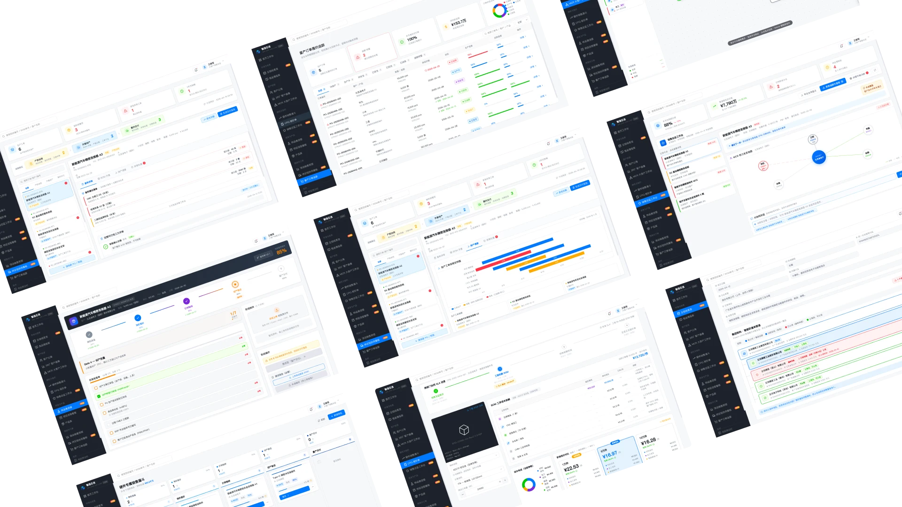

在完成"智造芯连 CRM"核心模块设计后，我们邀请了制造企业一线的销售、研发及交付人员对工作台及客户模块进行可用性测试，并在灰度期间收集大家的建议反馈，快速跟进迭代了CPQ配置与MCR权力地图模块。
追求极致可视化的初心却增加了部分老用户的认知成本（如复杂的拓扑图）。B端产品改版一定要平衡用户原本的使用习惯。避免陷入单一的"酷炫"需求中，需要带入更全局的视角来完善产品的体系化建设，站在业务流转和企业的角度多维度思考。
多角色协同的产销系统，必须按用户角色细分场景和目标（如销售看漏斗，研发看阶段条），分别对应不同的UI设计策略，但在底层数据上保持高度连接。
